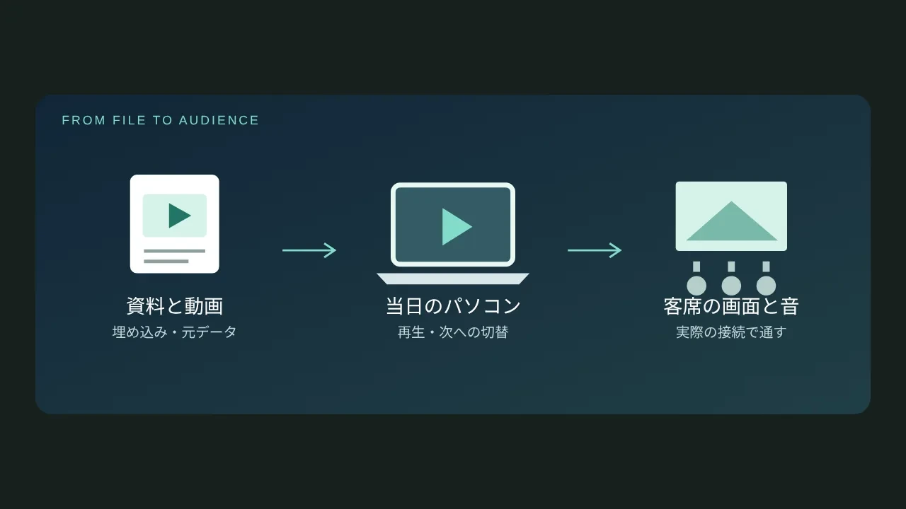

LOTUS VISUAL JOURNAL / ためになる仕事術 #04
「手元では流れたのに」を防ぐ。PowerPointの動画を会場へ持ち込む前に
発表の途中で動画に切り替わり、会場の空気が変わる。そんな場面を作るには、映像の内容だけでなく「当日、何で再生するか」も大切です。
自分のパソコンで流れた動画が、別のパソコンでも同じように流れるとは限りません。準備の順番を、ファイル → 再生するパソコン → 会場の画面と音に分けると、確認する場所を絞れます。
01 / STEP 1スライドの中に、動画そのものが入っていますか？
スライドに動画が見えていても、別の場所にあるファイルを呼び出している場合があります。これが「リンク」です。スライドだけを渡すと、移動先で動画を見つけられなくなることがあります。
一方の「埋め込み」は、動画をプレゼンテーションに含める方法です。ファイルは大きくなりますが、持ち運ぶときの取りこぼしを減らせます。リンクを使う場合は、動画とプレゼンテーションを同じフォルダーにまとめ、そのフォルダーごと渡しましょう。［1］
持ち込みのおすすめ： プレゼンテーションに加えて、上映する権利のある元動画も別に用意します。スライド内で再生できない場合に、動画を単独で再生する準備ができます。
02 / STEP 2「MP4だから大丈夫」で終わらせない
MP4はファイルの入れ物の名前です。同じ拡張子でも、中の映像・音声の形式は異なります。Microsoftは、PowerPoint向けにH.264の映像とAACの音声を使ったMP4を案内しています。［1］
ただし、形式を合わせただけで会場全体の再生が保証されるわけではありません。渡したファイルを、実際に使うパソコンのPowerPointで開くところまでが準備です。
編集担当へ伝えるひと言：「当日使うパソコンに合わせて、動画の形式と、音が必要な場面をそろえてください」。変換が必要なら元のデータを残し、納品用のコピーで作業しましょう。
03 / STEP 3便利な最適化にも、残したいものがある
Windows版PowerPointでは、必要に応じて［ファイル］→［情報］にメディアの［互換性の最適化］が表示されます。ただしMicrosoftは、この処理で埋め込み字幕や代替オーディオトラックが削除されることを案内しています。［2］
字幕を必要とする上映や、音声の言語を切り替える発表では、元ファイルを上書きせずに作業してください。メニューの有無や名称は、利用する版や環境によって異なります。
04 / STEP 4会場では、画面だけでなく「客席で聞こえる音」まで
動画の最初が映ったら、次は音です。パソコンから音が出ても、客席のスピーカーへ届いているとは限りません。
リハーサルは、本番で使う接続のまま、次の流れをひと続きで試すと実用的です。
- 動画のあるスライドへ進み、予定どおりの操作で再生する。
- 冒頭だけでなく、音のある場面と終わりまで流す。
- 客席側で映像と音を確かめ、次のスライドへ戻る。
オンラインの映像を使う場合は、会場の通信とサービス側の利用条件も準備に含めます。無断ダウンロードではなく、利用を許されたファイルの用意や別の見せ方を、事前に決めておきましょう。
05 / STEP 5予備は「同じものをもう一つ」だけではない
発表者のペースに合わせて進めたいならPowerPoint。順番も時間も決まった映像なら、動画ファイルとして書き出す方法もあります。PowerPointにはプレゼンテーションを動画にする機能があり、スライドの表示時間などを指定できます。［3］
ただし、動画にすると発表中の自由なページ移動とは使い勝手が変わります。本番用の資料、単独再生用の動画、映像が使えないときに説明する静止画を、進行に合わせて選ぶのがおすすめです。予備を増やしすぎず、切り替える担当とタイミングまで決めておくと迷いません。
06 / MEMO映像担当へ渡す、短い準備メモ
- 使用するパソコン：持ち込み／会場側で用意
- OSとPowerPointの版：
- 動画があるスライドと、音が必要な場面：
- 再生方法：クリック／自動
- インターネット接続：必要／不要
- 予備の再生方法と、切り替えを判断する人：
映像の準備は、機材名をそろえることだけではありません。「どの場面で、何を見せたいか」が分かれば、再生方法も相談しやすくなります。会場・開催日・動画の有無から、映像の準備を整理してみませんか。会場映像の準備を相談する ↗